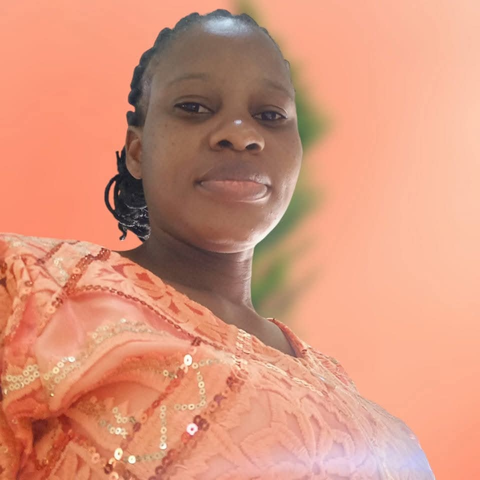

OTUNLA | WDD 130

My name is Otunla Kehinde Modupe. I am a student of Brigham Young University BYU Idaho studying Software Engineering through the BYU Idaho Ensign College Pathway Program. I have a strong passion for technology, especially programming, where I enjoy building logical solutions to real-world problems. I am also deeply interested in web design and graphics design, combining creativity with technical skills to create engaging digital experiences. Learning new tools, frameworks, and design techniques excites me because they help me improve my abilities and stay current in the fast-growing tech industry. My goal is to become a skilled software engineer who develops innovative applications and visually appealing digital products that positively impact people and businesses.